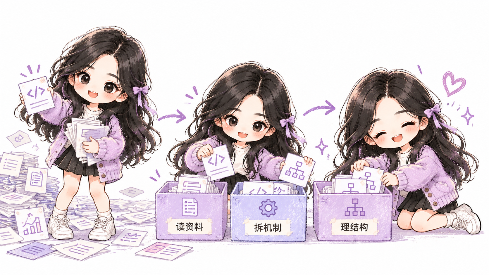
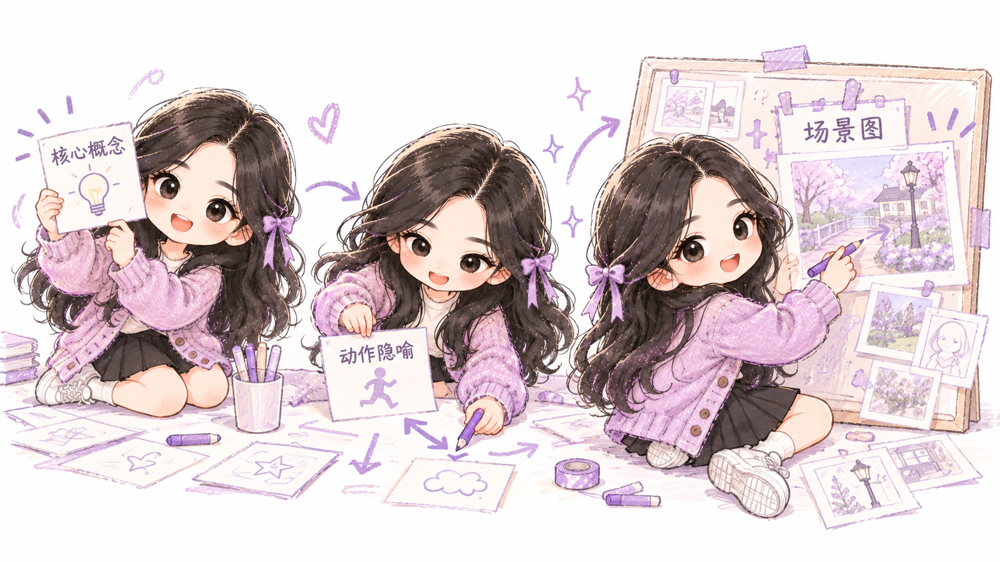
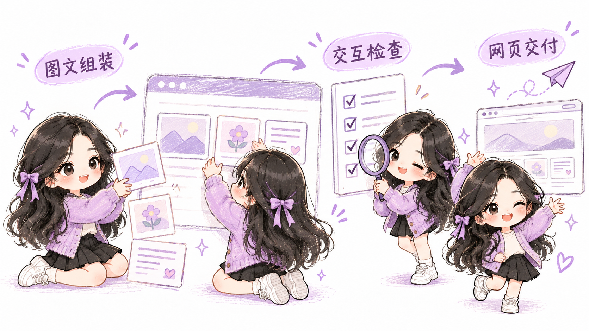

01 / PRODUCT DESIGN
家庭用药管理 · 把照护需求变成清楚的路径
挑战杯省级三等奖 · 产品方案设计负责人
从老人录入到家属查看，围绕少层级、大字号与明确反馈组织核心路径
点击节点，展开具体做法 · 流程为项目结构示意
查看具体工作与交付物
围绕老年人用药与家属照护场景，组织用药录入、定时提醒、异常反馈和家属查看四个核心环节，完成核心功能规划与功能流程图，提出 AI 语音交互设想。
交互方案重点考虑字号、操作层级和反馈提示，将两类用户的任务衔接到同一条业务路径中。
从想清楚一个问题，到把方案真正用起来。这里记录 6 次具体的尝试。
挑战杯省级三等奖 · 产品方案设计负责人
从老人录入到家属查看，围绕少层级、大字号与明确反馈组织核心路径
点击节点，展开具体做法 · 流程为项目结构示意
围绕老年人用药与家属照护场景，组织用药录入、定时提醒、异常反馈和家属查看四个核心环节，完成核心功能规划与功能流程图，提出 AI 语音交互设想。
交互方案重点考虑字号、操作层级和反馈提示，将两类用户的任务衔接到同一条业务路径中。
个人 IP · 紫衣角色图解 · 网页呈现
让紫色衣服的 Zia 亲自参与讲解，把资料分析、动作设计和网页交付串成一套可复用的图解流程。
固定角色身份、服装与画风，让动作随着内容变化。把参考图、创作规则、Prompt 和网页模板沉淀为 xiaozhi-skill。

读取 README 与关键实现，把复杂内容拆成清楚的问题与机制。每一条解释都对应真实材料。

保持黑长发、圆润脸型和紫色服装，用分拣、连接、组装等动作解释机制。一张图只讲一个概念。

将场景图、说明与导航组装为图解网页，再核对人物一致性、文字、图片加载和移动端布局。
从 Zia 的紫色服装与柔和手绘质感出发，将角色延伸到头像、首页插画、作品说明与页面配色，再由玛丽串起浏览路线。角色负责表达，页面负责把作品、经历和能力组织清楚。
个人角色与紫色视觉迭代、角色规范、提示词适配及工作流组织由我完成。代码图解基础流程和网页模板改编自 xiaohei-code-decoder ↗，保留来源致谢。
企业资料整理、分类与知识调用规则
将分散资料整理为可引用、可维护的知识资产，区分事实层、表达规则与反馈层
点击节点，展开具体做法 · 流程为项目结构示意
围绕企业产品资料分散、内容引用口径不统一的问题，梳理约 20 款产品的历史资料，设计 9 类标签，清洗并沉淀 60+ 份标准问答，便于按产品能力、业务场景和常见问题查找与复用。
在后续知识体系建设中，结合 WorkBuddy 资料库、本地 Markdown 文件与 Skills 调用规则，进一步组织资料索引、来源与适用边界，为内容创作和 AI 辅助问答提供可追溯的事实依据。
| 任务问题 | 调用与处理方式 | 交付检查 |
|---|---|---|
| 同一主题怎样适配多个平台？ | 先调用共同内容母资产，再读取对应平台文风规则 | 各平台事实一致，表达结构分别适配 |
| 产品能力怎样转成业务表达？ | 按产品与场景索引查找资料，将能力、条件和来源一起整理 | 明确能力适用范围，保留来源 |
| 资料出现冲突怎样处理？ | 对照来源、更新时间与适用范围，将冲突项单独记录 | 人工核验后更新共同依据 |
依据现有知识调用与审核规则重新整理的展示样例
慧博科技 · AI 产品运营实习 / 内容自动化方向
把选题、资料、写作与审核拆成可复用流程，围绕平台差异组织内容，而非简单换词
点击节点，展开具体做法 · 流程为项目结构示意
从报表处理的具体困扰切入，采用短句和较快节奏
把 AI 话题转译成业务问题，先解释适用情境
围绕多平台内容交付，将选题、资料检索、母稿、平台改写和质检组织成标准流程。分析 82 篇、约 29 万字历史内容，提炼语言、结构和视觉规则，形成平台写作与审核依据。
交付内容包括主题情报、内容母资产、公众号稿、知乎稿、视频脚本和审核记录。另设计 24 小时、7 天和 30 天数据回收节点，将阅读、互动与线索字段纳入复盘模板。
主题资料与业务问题 → 提取事实与来源 → 形成内容母资产 → 分别组织公众号、知乎和视频表达 → 统一审核
主题情报、内容母资产、公众号稿、知乎稿、视频脚本、审核记录，共六类文件
按已有交付包结构整理，业务名称与内部事实已省略
品牌与行业场景词整理 / 监测思路
把品牌可见性拆成问题词、回答引用、来源与内容结构四个可检查环节
点击节点，展开具体做法 · 流程为项目结构示意
整理 20+ 产品与行业场景关键词，将品牌可见性拆为问题词、回答提及、引用来源和内容结构等观察项，形成品牌与竞品对照的监测思路。
围绕回答中的信息缺口，调整内容结构与产品信息密度，并设计固定模型、问题与时间窗口的复查方式。
全国数字经济案例大赛 · 特等奖 / 数据分析与报告支撑
围绕企业数字化转型，组织数据清洗、指标比较与分析报告
点击节点，展开具体做法 · 流程为项目结构示意
围绕农业企业数字化转型，使用 Python / Pandas 整理生产与销售数据，以 Matplotlib 呈现经营指标差异，并将分析结果整理为研究报告和业务建议。
项目获得全国数字经济案例大赛特等奖，承担数据分析与报告支撑工作。